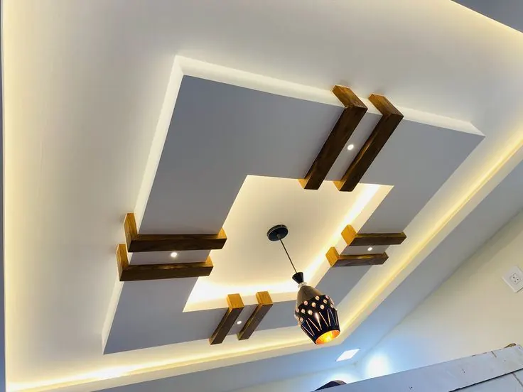
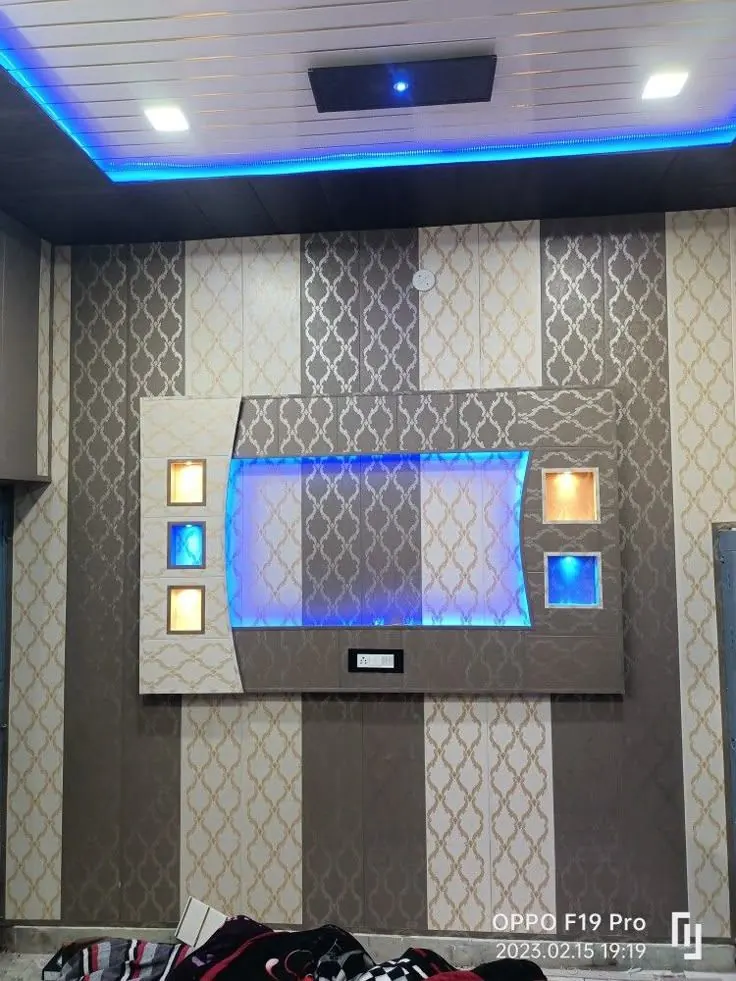
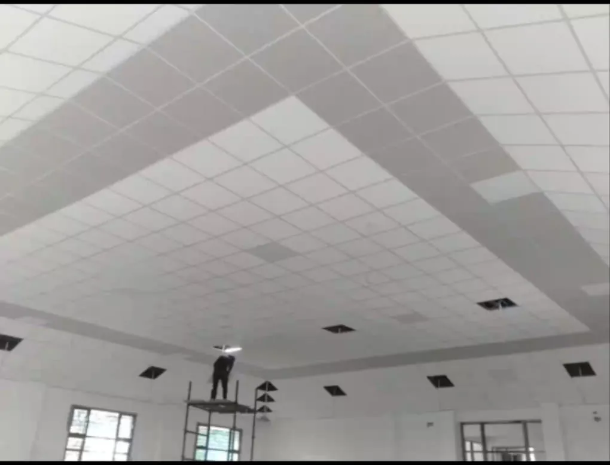
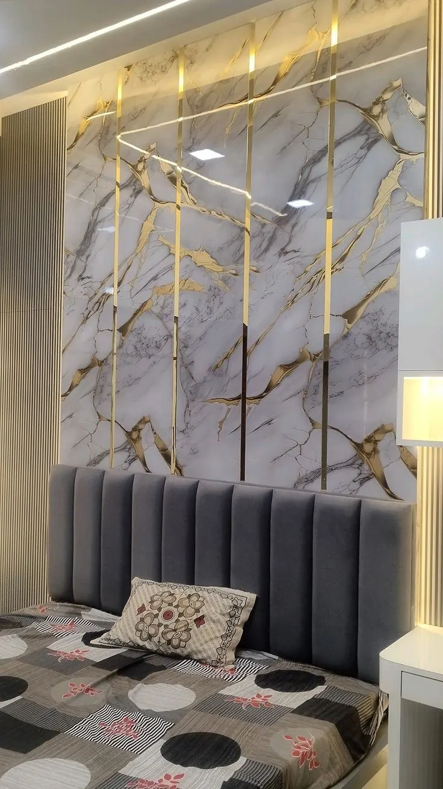
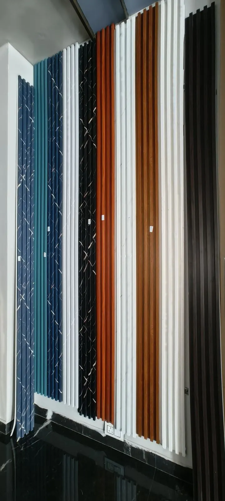
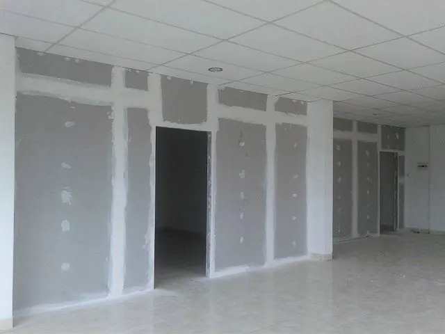
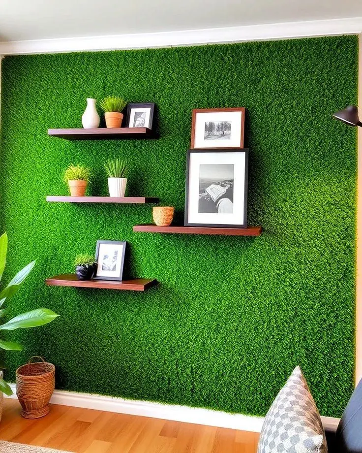

Gypsum • PVC • WPC • UV Marble Sheet • Interior Work (Araria District)
WhatsApp पर संपर्क करेंJK Interior 5+ साल के अनुभव के साथ Forbesganj, Araria, Jogbani, Simraha, Raniganj और आसपास के सभी क्षेत्रों में घर, दुकान और ऑफिस के लिए false ceiling और interior work करता है। हम quality material, trained labour और सही finishing पर ध्यान देते हैं — यही वजह है कि लोग हमें अपने जिले का भरोसेमंद False Ceiling Contractor मानते हैं।

Gypsum false ceiling घर और ऑफिस के लिए सबसे popular ceiling design है। इसमें LED light, cove lighting और modern pattern लगाए जाते हैं। यह ceiling गर्मी कम करती है और interior को premium look देती है।

PVC ceiling पूरी तरह waterproof और termite-free होती है। Kitchen, bathroom और damp area के लिए यह सबसे अच्छा option है। कम maintenance और लंबी उम्र इसकी खासियत है।

Grid ceiling office, hospital और showroom में लगाई जाती है। इसका सबसे बड़ा फायदा easy maintenance और wiring access है। कम खर्च में professional look देने वाली ceiling है।

UV marble sheet glossy marble finish देती है। TV unit, wall elevation और shop decoration के लिए best है। यह lightweight, waterproof और affordable होती है।

WPC और fluted panel modern interior design का trend है। यह waterproof, strong और termite-proof material से बने होते हैं। Bedroom, TV wall और office cabin में खूब उपयोग होते हैं।

Gypsum board partition से office cabin और room divider बनाए जाते हैं। यह जल्दी लग जाता है और साफ-सुथरा professional look देता है।

Artificial grass balcony, terrace और decoration के लिए लगाई जाती है। यह natural look देती है और maintenance बहुत कम होता है।
Room के size और design के अनुसार आमतौर पर 2-5 दिन में false ceiling का काम पूरा हो जाता है।
PVC ceiling waterproof होती है और kitchen, bathroom के लिए best है। Gypsum ceiling बेहतर finishing और LED lighting design के लिए popular है।
Price room की size, material (PVC, Gypsum, Grid, WPC) और design की complexity पर depend करती है।
हाँ, हम Forbesganj, Araria, Jogbani, Simraha, Raniganj और आसपास के सभी क्षेत्रों में service देते हैं।